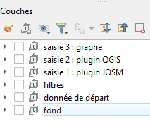
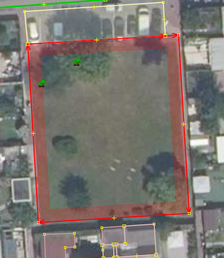
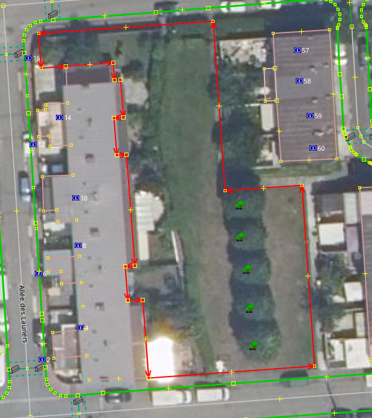
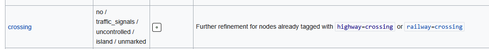
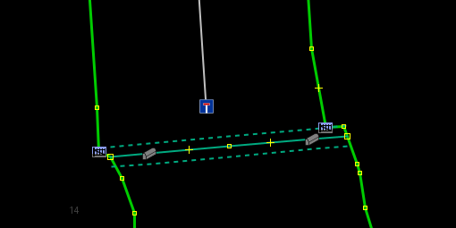
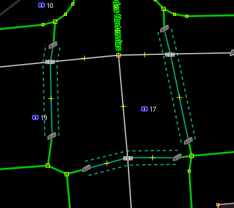
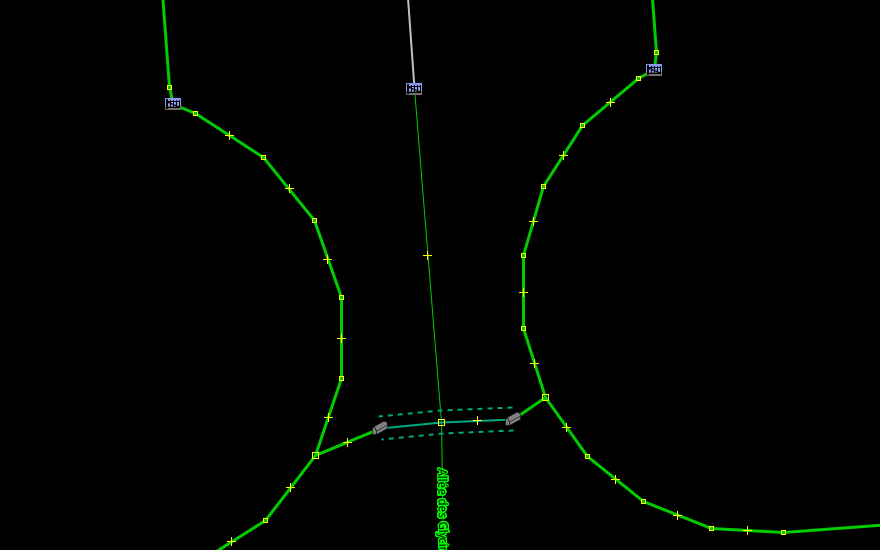
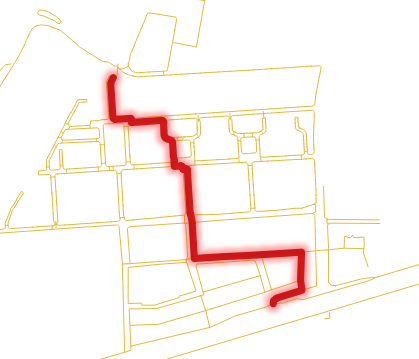
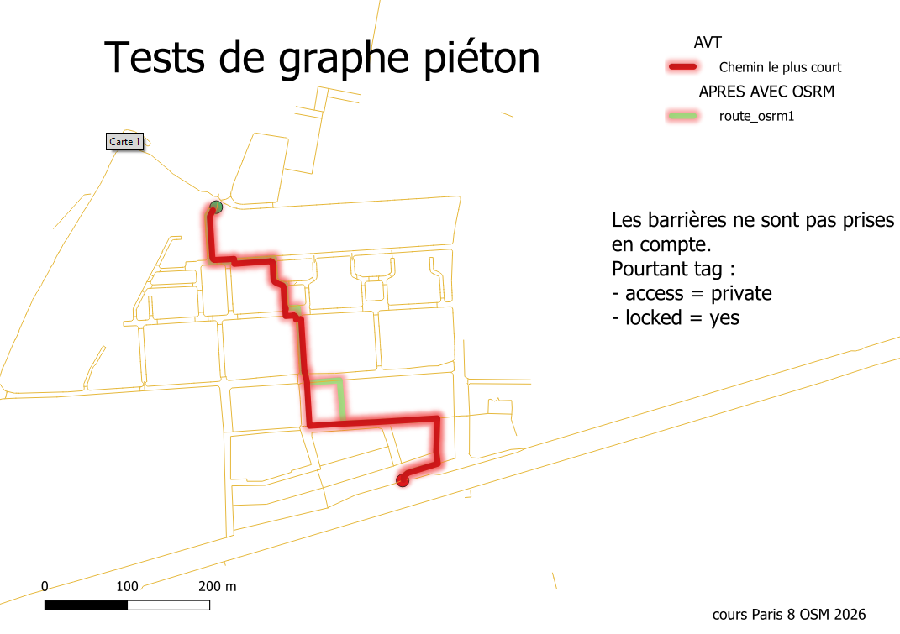

3e saisie : Itinéraire et amélioration de la saisie
1 Objectif
Afin de voir ce qui manque dans notre graphe, on utilise la fonction itinéraire de Qgis
Dans le projet Qgis, on en est à l’étape saisie 3

2 Un premier round d’observation
Il convient de revenir sur ce que le plugin a permis de faire en faisant une requête overpass
highway=footway or barrier=*
highway=footway or access=*2.1 Dessiner les jardins
Le fait de tracer les trottoirs amènent à tracer de nouveaux objets, par exemple, les jardins.


Pour le raccourci voir la procédure 1
2.3 Compléter le tag crossing
Enfin, il est possible dés ce niveau de distinguer les passages piétons marqués ou pas.

2.4 2 manières de figurer un passage piéton
Les 2 plugins utilisés amènent à deux façons de tagger, cela se voit avec la représentation graphique utilisé dans JOSM.


2.5 2 manières de représenter une porte empêchant le passage
Etre piéton, cela transforme la vision d’une porte fermée

3 Utilisation de l’outil plus court chemin dans QGIS
Après avoir fait une premier itinéraire, on modifie notamment les barrier=gate en ajoutant et locked=yes, on regarde si cela génère autre chose

Encore une carte avant et après :

Quelle est la manière de faire ?
Autre routeur à utiliser : graphhopper
Voir dans le forum, la discussion
4 En guise de conclusion, ce qu’il reste à faire
3 nouveaux outils
4.1 OSMI
Voir intervention
D’après le commentaire, utilisation d’OSMI
4.2 Panoramax
De l’art et de la manière de faire des photos
4.3 Street Complete
Rien ne vaut le terrain en nombre !